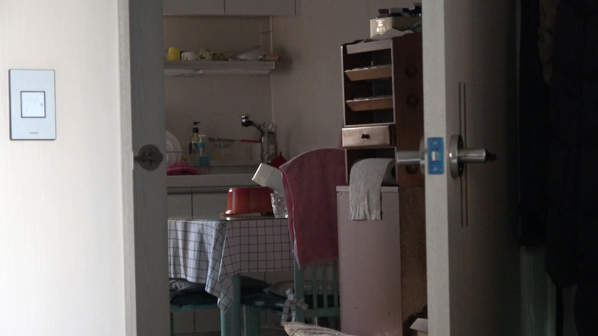

9/24
집안일은 집안일을 소재로 엄마와 나의 관계를 들여다보는 사적 다큐멘터리입니다.
9/25
이미지를 넣는 태그는 img입니다.

줄바꿈을 하는 태그는 br입니다.
p와 br의 차이
html paragraph tag라는 내용을 넣고 검색을 하면 p라는 태그가 나온다. 결과는 br과 같지만 p가 더 좋다. 단락을 의미론적으로 표현할 수 있기 때문이다. br은 그저 줄바꿈만 할 수 있다. p는 단점이 있다. 정해져있는 여백만큼만 벌어지기 때문에 시각적으로 자유도가 떨어진다. 이는 css를 통해 해결하면 된다.
이제 목차를 만드는 방법을 보자.
- HTML
- CSS
- JavaScript>
- 두번째 리스트
- 첫번째 리스트는 ol, 두번째는 ul태그로 묶여있다.
- ul은 부모태그, li는 자식태그가 된다.
이제 하이퍼링크에 대해서 알아보자. 하이퍼링크를 클릭했을 때 새로운 페이지가 생겨나도록 하면 된다. 새 탭으로 열리게 하거나, 링크가 툴팁으로 설명되는 것도 할 수 있다. 툴팁은 링크에 커서를 올리면 볼 수 있다.
9/26